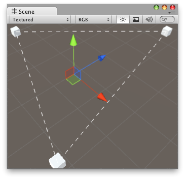

Handles.DrawDottedLines
public static void DrawDottedLines(Vector3[] lineSegments,
float screenSpaceSize);
Parameters
| lineSegments | A list of pairs of points that represent the start and end of line segments. | |
| screenSpaceSize | The size in pixels for the lengths of the line segments and the gaps between them. |
Description 描述
Draw a list of dotted line segments.
 "Draw multiple dotted lines in sceneview.".
// Draw lines to the connected game objects that a script has. // if the target object doesn't have any game objects attached // then it draws a line from the object to 0,0,0.
using UnityEditor; using UnityEngine; using System.Collections.Generic;
[CustomEditor(typeof(ConnectedLineObjects))] class ConnectDottedLineHandle : Editor { float dashSize = 4.0f; void OnSceneGUI() { ConnectedLineObjects connectedObjects = target as ConnectedLineObjects; if (connectedObjects.objs == null || connectedObjects.objs.Length == 0) return; // we store the start and end points of the line segments in this array Vector3[] lineSegments = new Vector3[connectedObjects.objs.Length * 2];
int lastObject = connectedObjects.objs.Length - 1; Vector3 prevPoint; if (connectedObjects.objs[lastObject]) { prevPoint = connectedObjects.objs[lastObject].transform.position; } else { prevPoint = Vector3.zero; } int pointIndex = 0; for (int currObjectIndex = 0; currObjectIndex < connectedObjects.objs.Length; currObjectIndex++) { // find the position of our connected object and store it Vector3 currPoint; if (connectedObjects.objs[currObjectIndex]) { currPoint = connectedObjects.objs[currObjectIndex].transform.position; } else { currPoint = Vector3.zero; }
// store the starting point of the line segment lineSegments[pointIndex] = prevPoint; pointIndex++;
// store the ending point of the line segment lineSegments[pointIndex] = currPoint; pointIndex++;
prevPoint = currPoint; } Handles.DrawDottedLines(lineSegments, dashSize); } }
And the script attached to this Handle:
using UnityEngine; using System.Collections;
public class ConnectedLineObjects : MonoBehaviour { public GameObject[] objs = null; }
public static void DrawDottedLines(Vector3[] points,
int[] segmentIndices,
float screenSpaceSize);
Parameters
| points | A list of points. | |
| segmentIndices | A list of pairs of indices to the start and end points of the line segments. | |
| screenSpaceSize | The size in pixels for the lengths of the line segments and the gaps between them. |
Description 描述
Draw a list of indexed dotted line segments.
// Draw lines to the connected game objects that a script has. // If the target object doesn't have any game objects attached // then it draws a line from the object to (0, 0, 0).
using UnityEditor; using UnityEngine; using System.Collections.Generic;
[CustomEditor(typeof(ConnectedLinesObjects))] class ConnectDottedLinesHandle : Editor { float dashSize = 4.0f; void OnSceneGUI() { ConnectedLinesObjects connectedObjects = target as ConnectedLinesObjects; if (connectedObjects.objs == null || connectedObjects.objs.Length == 0) return;
// we store the points of the line segments in this array Vector3[] points = new Vector3[connectedObjects.objs.Length];
// for each line segment we need two indices into the points array: // the index to the start and the end point int[] segmentIndices = new int[connectedObjects.objs.Length * 2];
// create the points and line segments indices int prevIndex = connectedObjects.objs.Length - 1; int pointIndex = 0; int segmentIndex = 0; for (int currIndex = 0; currIndex < connectedObjects.objs.Length; currIndex++) { // find the position of our connected object and store it if (connectedObjects.objs[pointIndex]) { points[pointIndex] = connectedObjects.objs[currIndex].transform.position; } else { points[pointIndex] = Vector3.zero; }
// the index to the start of the line segment segmentIndices[segmentIndex] = prevIndex; segmentIndex++;
// the index to the end of the line segment segmentIndices[segmentIndex] = pointIndex; segmentIndex++;
pointIndex++; prevIndex = currIndex; } Handles.DrawDottedLines(points, segmentIndices, dashSize); } }
And the script attached to this Handle:
using UnityEngine; using System.Collections;
public class ConnectedLinesObjects : MonoBehaviour { public GameObject[] objs = null; }